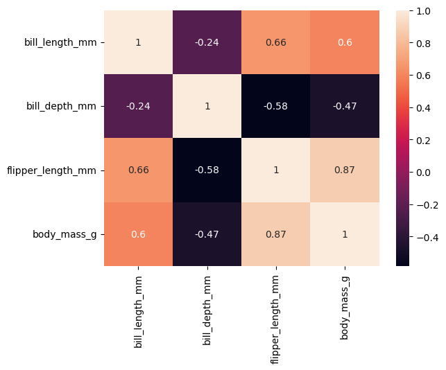
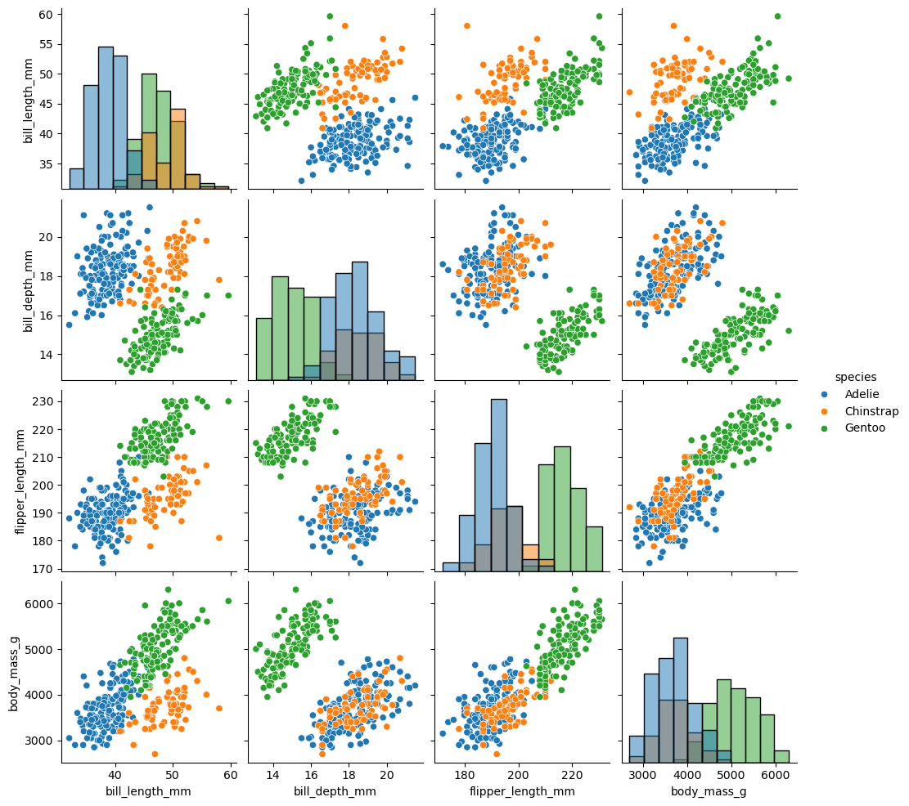

Week 3, Fri, 4/18#
import seaborn as sns
import numpy as np
df = sns.load_dataset("penguins")
corr = df[["bill_length_mm", "bill_depth_mm", "flipper_length_mm", "body_mass_g"]].corr()
corr
| bill_length_mm | bill_depth_mm | flipper_length_mm | body_mass_g | |
|---|---|---|---|---|
| bill_length_mm | 1.000000 | -0.235053 | 0.656181 | 0.595110 |
| bill_depth_mm | -0.235053 | 1.000000 | -0.583851 | -0.471916 |
| flipper_length_mm | 0.656181 | -0.583851 | 1.000000 | 0.871202 |
| body_mass_g | 0.595110 | -0.471916 | 0.871202 | 1.000000 |
sns.heatmap(corr, annot=True)
<Axes: >

sns.pairplot(df, diag_kind="hist", hue = 'species')
<seaborn.axisgrid.PairGrid at 0x177f2e0c0>

Problem#
Given the training dataset \(x_i\in\mathbb{R}\), \(y_i\in\mathbb{R}\), \(i= 1,2,..., N\), we want to find the linear function
that fits the relations between \(x_i\) and \(y_i\). So that given any \(x\), we can make the prediction
Loss Function and Optimization#
With the training dataset, define the loss function \(L(w,b)\) of parameter \(w\) and \(b\), which is also called mean squared error (MSE)
where \(\hat{y}^{(i)}\) denotes the predicted value of y at \(x_i\), i.e. \(\hat{y}^{(i)} = wx_i+b\).
Our goal is to find the optimal \(w\) and \(b\) that minimize the loss function \(L(w,b)\), i.e.
This is a function of \(w\) and \(b\), and we can analytically solve \(\partial_{w}L = \partial_{b}L =0\), and yields
where \(\bar{X}\) and \(\bar{Y}\) are the mean of \(x\) and of \(y\), and \(\text{Cov}(X,Y)\) denotes the estimated covariance (or called sample covariance) between \(X\) and \(Y\), \(\text{Var}(Y)\) denotes the sample variance of \(Y\).
# poll: What is the optimal slope and intercept for the data?
import numpy as np
x = np.array([0,1,2,3])
y = np.array([0,2,0,6])
cov_mat = np.cov(x,y)
cov_mat = np.cov(x,y,bias=False)
print(cov_mat)
[[1.66666667 2.66666667]
[2.66666667 8. ]]
cov_mat = np.cov(x,y,bias=True)
print(cov_mat)
[[1.25 2. ]
[2. 6. ]]
w = cov_mat[0,1]/cov_mat[0,0]
w
1.6
b = np.mean(y) - w * np.mean(x)
b
-0.40000000000000036
Evaluating the Model#
Mean Squared Error (MSE): Smaller MSE indicates better performance. However, MSE depends on the units of measurement—for example, changing units from meters to millimeters multiplies the MSE by a factor of \(1000^2\).
Coefficient of Determination \( R^{2} \): $\( R^{2} = 1 - \frac{\sum_{i=1}^{N}(y_i-\hat{y}_i)^{2}}{\sum_{i=1}^{N}(y_i-\bar{y})^{2}} = 1 - \frac{\text{MSE}}{\text{Var}(Y)} \)$
A higher \( R^{2} \) (closer to 1) indicates better performance. Unlike MSE, \( R^{2} \) is dimensionless and independent of the units.
\( R^{2} \) measures the proportion of variance in the data explained by the model. If the model perfectly fits the data (MSE=0), then \( R^{2}=1 \). Conversely, using a constant model (predicting the mean), MSE equals the variance of \( y \), and \( R^{2}=0 \).
import numpy as np
import matplotlib.pyplot as plt
class myLinearRegression:
'''
The single-variable linear regression estimator.
This serves as an example of the regression models from sklearn, with methods fit, predict, and score.
'''
def __init__(self):
'''
'''
self.w = None
self.b = None
def fit(self, x, y):
# covariance matrix,
# bias = True makes the factor 1/N, otherwise 1/(N-1)
# but it doesn't matter here, since the factor will be cancelled out in the calculation of w
cov_mat = np.cov(x, y, bias=True)
# cov_mat[0, 1] is the covariance of x and y, and cov_mat[0, 0] is the variance of x
self.w = cov_mat[0, 1] / cov_mat[0, 0]
self.b = np.mean(y) - self.w * np.mean(x)
# :.3f means 3 decimal places
print(f'w = {self.w:.3f}, b = {self.b:.3f}')
def predict(self, x):
'''
Predict the output values for the input value x, based on trained parameters
'''
ypred = self.w * x + self.b
return ypred
def score(self, x, y):
'''
Calculate the R^2 score of the model
'''
mse = np.mean((y - self.predict(x))**2)
var = np.mean((y - np.mean(y))**2)
Rsquare = 1 - mse / var
return Rsquare